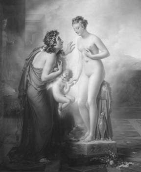
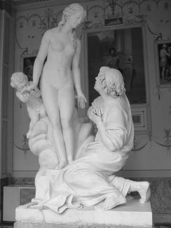

Kıbrıslı genç Pigmalyon (Pygmalion), yaşamını tümden heykelciliğe adamış halim selim, genç bir sanatçıydı... Pek çok insanın başına geldiği gibi onun da uzun süre aşktan yana başı gülmedi... Ve bu konuda ne geldiyse başına, hep hemşehrisi olduğu tanrıça Afrodit yüzünden geldi!..

Pigmalyon, Eros ve canlanan heykel
Çünkü gönül verdiği her kız, hep güzellik tanrıçası Afrodit'in hışmına uğramış Amonthonte adındaki bir kadının arsız ve yüzsüz kızlarından biriydi!.. Bunun hep böyle olmasının nedenini ilk zamanlar Pigmalyon pek anlayamadı. Çünkü tanrıların kendilerine başkaldıran ölümlüleri acımasızca cezalandırdığı gibi bir olgudan haberi yoktu... İşte tanrıça Afrodit de kendisine yüz gönül vermeyen ve tapınağının yanından bile geçmeyen Amonthonte adlı bu kadını cezalandırmıştı. Onun doğurduğu Propoedites denen bütün kızlarının ar perdelerini yırtıyor, onları önüne gelenle düşüp kalkan arsız sokak kızlarına dönüştürüyordu... Gene heykeltıraşımız Pigmalyon da, tanrıça Afrodit'e yüz vermeyen, onun adına mermerler yontmayan bir sanatçıydı. O yüzden sokaklarda dolaşırken, sanatçımızın karşısına çıkıp da gönlünü kaptırdığı kızların hep o yüzsüz Propoedites'lerden birinin olması boşuna değildi!..
Pigmalyon her seferinde karşısına çıkan bu kızlardan öylesine bıkıp usandı ki, artık işliğine kapanıp mermerden, gönlüne uygun örnek bir kadın heykeli yontmaya karar verdi... Uzun süre evinden çıkmadı. Gece gündüz demedi; hep yonta yonta şekillendirdiği mermerle uğraştı didindi... Sonunda kusursuz denebilecek bir genç kız heykeli çıkardı ortaya... Ama Pigmalyon bu kadarla yetinmiyor; heykelin orasını burasını sürekli düzeltiyor, elinden geldiğince –belki de ayırdında bile olmaksızın, tanrıça Afrodit'i çileden çıkarırcasına– heykelin en göze batmaz kusurlarını da gidermeye çalışıyordu... Heykeltıraşımız heykeliyle öylesine çok ve inceden inceye ilgilendi ki, sonunda başka bir heykel yontmak bile içinden geçmez oldu. Daha sonraki günlerde, heykelinde yontulup düzeltilecek taraf bulamayan Pigmalyon, bu kez de ona gerçek ve sınırsız bir tutkuyla bağlanmaya başladı. Ona tanrıçalara yaraşan giysiler, ayaklarına en gözalıcı ve en usta ellerde örülmüş çoraplar, gösterişli ayakkabılar giydiriyordu artık. Daha sonraki günlerde de geceleri onu yatağına almadan uyuyamaz oldu!.. Bu durum tanrıça Afrodit'in de ilgisini çekmeye başladı. Heykeltıraş, gün boyu heykelinin karşısına geçiyor, canlı bir kadınmış gibi ona diller döküyor; durmadan bir şeyler anlatıyordu. Pigmalyon, günlük gereksinimlerini gidermek dışında, evinden bile pek çıkmıyordu artık. Hele hele durmadan karşısına arsızca çıkan Propoedites'lerden hiçbirine dönüp bakmıyordu bile...
Bir gün penceresinden dışarıya bakarken Kıbrıs'ta çok uzun süren baharın geldiğinin ayırdına vardı. Her zaman olduğu gibi, baharın gelişiyle birlikte, denizin köpüklerinden can bulan Kıbrıslı tanrıça Afrodit adına düzenlenen şenlikler de başladı. Gelenek olduğu üzere rengârenk giysilerle donanmış genç kızlar, başları çelenkli delikanlılar, bu bayramı doya doya kutluyorlardı. Yalnız kalmış, o ana dek aradıklarını bulamamış gençler de, bu şölenlerde beğendikleriyle tanışıyorlardı. Kimileri de Afrodit'in kutsal tapınağında, gönüllerinden geçen aşk dileklerinin gerçekleşmesi için tanrıçaya yalvarıp yakarıyorlardı.
Yıllardır gece gündüz yonttuğu heykelden başka bir gönüldeş düşünemeyen Pigmalyon, son bir kez yeniden talihini denemek istedi. Bu amaçla şölen coşkuları içindeki genç kızlardan biriyle ilişki kurmaya kalkınca, karşısına gene o arsız kızlardan biri çıkıverdi!..
Artık yazgısına ilençler yağdıraraktan evine, heykelinin yanına dönmeye karar verdi. Ne var ki yolu üstündeki Afrodit'in tapınağının yanından geçerken, aniden durakladı. Tapınak, kendisine uygun eş bulabilmek için dileklerde bulunan gençlerle dolup taşıyordu. "Ben de bu başı gülmemişlerden biri gibi gidip gönlümden geçenleri tanrıça Afrodit'e anlatsam olmaz mı?" dedi kendine ve tapınağa girenlerin arasına karışıverdi... Tapınaktaki tanrıça Afrodit'in heykeline bakarak; "Tanrıçam, şimdiye dek sana hiç derdimi açmadımsa da beni bağışla. Beni, heykelime benzeyen bir kızla eşleştir. Dileğimi yerine getirirsen, sana yaraşacak en güzel heykelini yontacağım..." diye söz verdi. Afrodit her ne kadar ölümlülere uyguladığı cezalarda inatçıysa da, heykeltıraşın içten yalvarısı karşısında çok duygulandı. Üstelik kendisine yaraşacak en güzel heykeli yalnızca onun yontabileceğini de bildiği için; düşünde bile görse inanmayacağı bir armağan sunmaya karar verdi ona!..
Pigmalyon tapınaktan çıkıp akşama dek bayramı kutlayan kalabalıklar arasında, içi biraz rahatlamış olarak gezip tozdu... Daha sonra da gene tek sevgilisi olarak benimsediği heykeliyle oyalanmak üzere mahzun mahzun, evinin yolunu tuttu... Eve varınca sabah evden çıkmadan önce, rengârenk bayramlık giysilerle donattığı heykelinin yanına gitti doğruca. Her zamanki gibi halini hatırını sorduktan sonra ona sarıldı. Umutsuzca dudaklarından öptü. Ama aniden heykelin dudaklarında bir kadın sıcaklığının uyandığını duyumsadı; irkildi. Belki yanılmış olabileceğini düşünerek yeniden sarılıp öptü. Bu kez heykelin daha bir ısındığını, canlı canlı titremeye başladığını, kendisine sıkıca sarıldığını gördü. Şaşırmaktan öte, iliklerine dek ürperdi... Artık heykeliyle aralarında, tanrıça Afrodit'in gönderdiği ve durmadan aşk kıvılcımları saçan yaramaz Eros vardı. O yüzden de heykel, çok geçmeden canlı bir kadın gibi ellenip ayaklandı; dillendi...

Pigmalyon ve aşkla can bulan heykeli
Bu aşamadan sonra, kendiliğinden can bulan heykelle Pigmalyon arasında olup bitenler konusunda fazla bir şey bilinmiyor. Ama Pigmalyon; mermer damarlarında aşk kanı dolaşmaya başlayan, ete kemiğe dönüşüp can bulan heykele Galateya (Galateia) adını verdi... Güzel mi güzel çocukları oldu; hatta çocukların ortancası Pafos (Paphos), Yunanistan'daki bir kentin isim babası bile oldu...
Ama Pigmalyon'un tanrıça Afrodit'e en güzel heykelini yapacağı konusunda verdiği sözü tutup tutmadığı da bilinmiyordu. Büyük bir olasılıkla, sözünü tutmaya çalıştıysa da, sevgilisinden daha güzel bir kadın heykeli yontamayacağı kesindi...
Pigmalyon'dan sonraki bütün soylu heykeltıraşlar, Afrodit'te simgeleşen en güzel kadın ve en yakıcı aşk özlemini dillendiren, sayısız ve birbirinden anlamlı Afrodit heykelleri yonttular hep.
Çünkü ilk ustaları Pigmalyon'un tanrıça Afrodit'e verdiği sözü, onun adına gerçekleştirmek istiyorlardı...